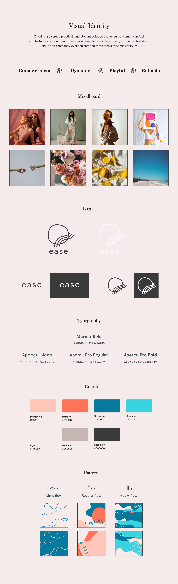
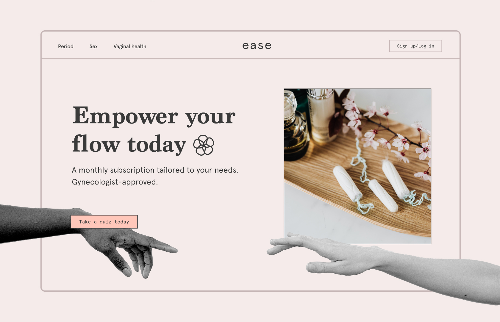
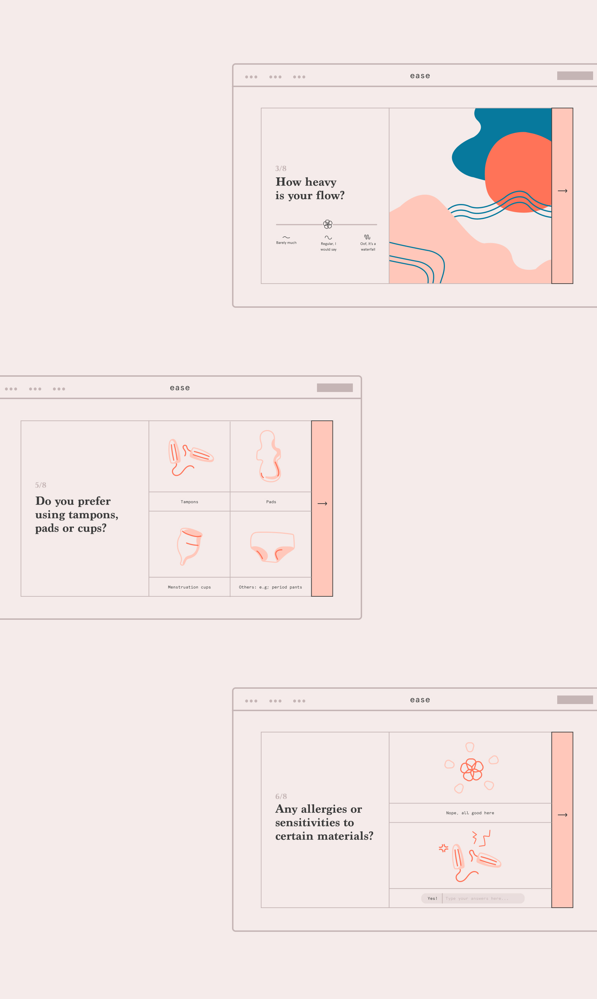
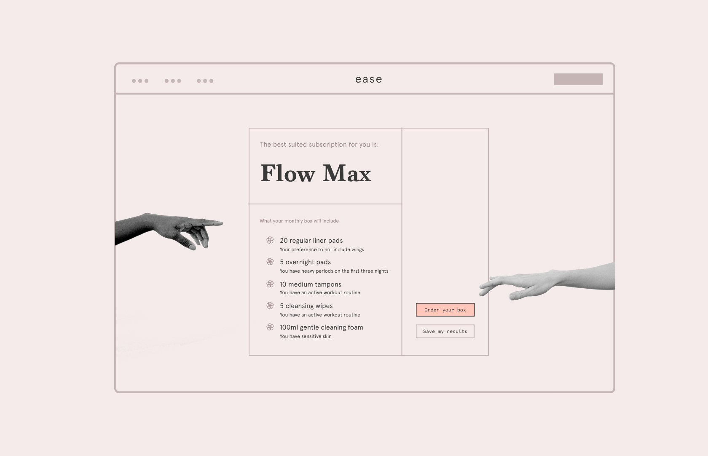
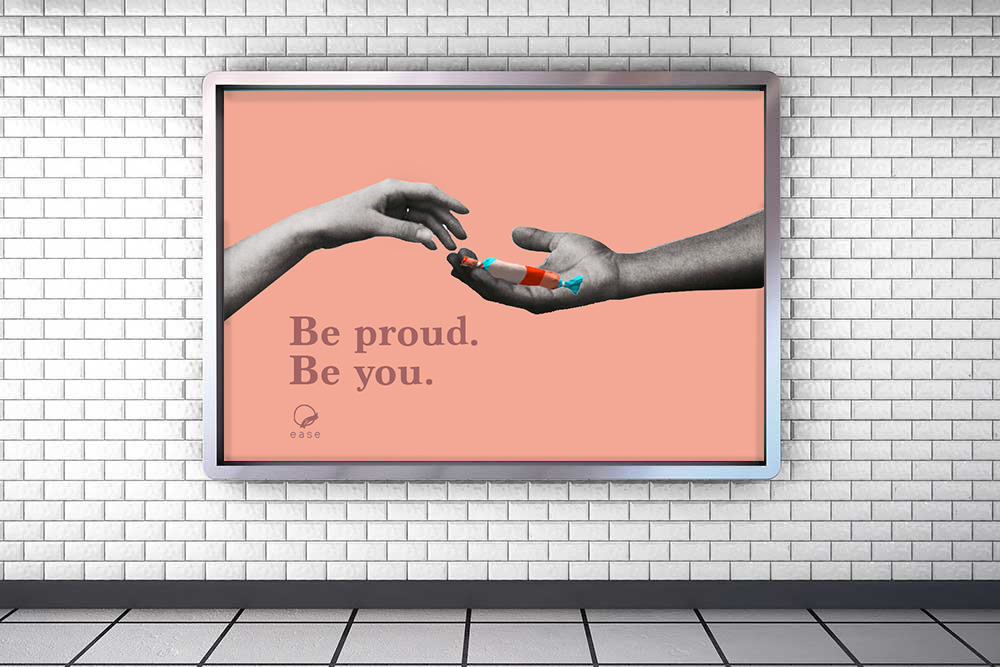
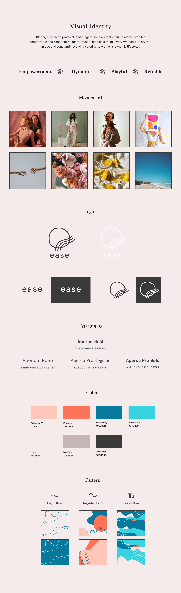
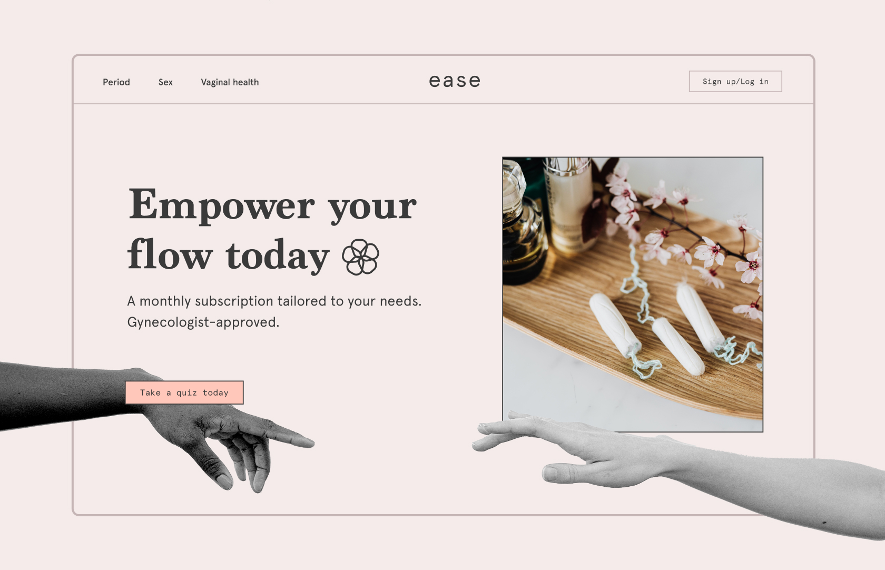
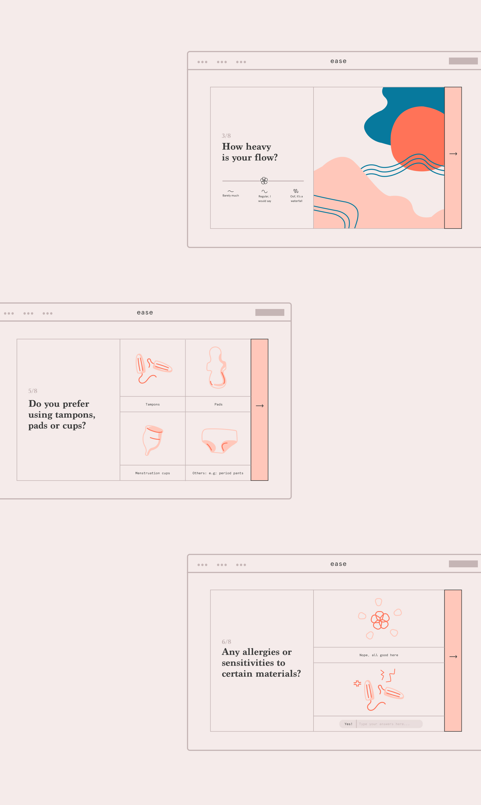
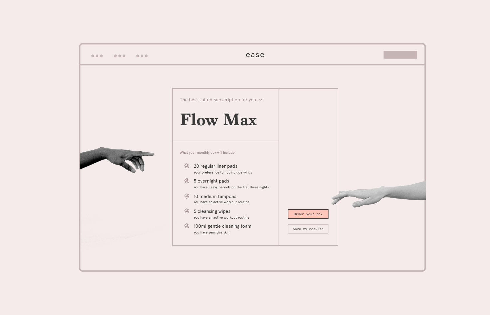
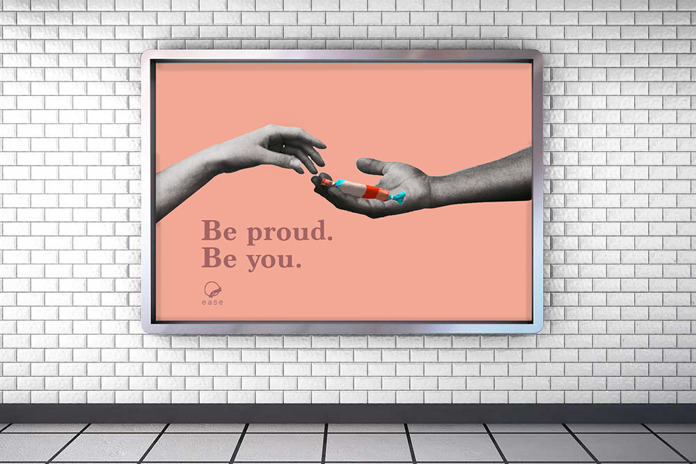

05
Ease: Monthly subscription
Visual identity
Branding
Application
Product design
Packaging design
Photography
Ease was born from a simple but powerful idea: acknowledging that many women across the globe feel awkward and uneasy when it comes to discussing the topic of their monthly periods, particularly in more conservative communities. The brand recognizes the importance of addressing the needs of these women, who may have experienced self-consciousness about carrying feminine products in public.

 








